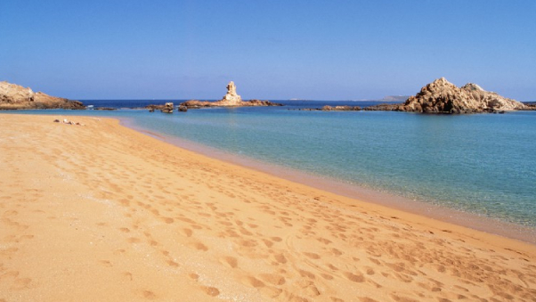
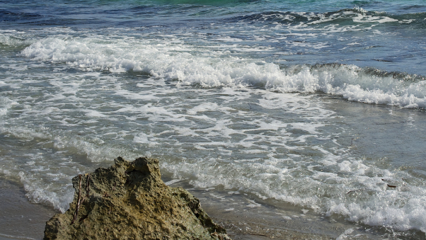

En la isla española de Menorca se pueden encontrar más de medio centenar de playas, desde completamente vírgenes y de difícil acceso a pie, hasta algunas con urbanizaciones junto a ellas. Se pueden distinguir fácilmente las playas de la costa norte y las de la costa sur.
Con tonos que van del blanco hasta un gris oscuro, las calas y playas adornan la costa de Menorca. La belleza natural del entorno que las rodea, la magnífica preservación de sus ecosistemas y la innegable majestuosidad del Mediterráneo besando la arena, convierten las playas de Menorca en un paraíso.
La infinidad de colores, texturas y ambientes que caracterizan a las playas y calas de la isla, hacen aún más interesante la exploración de la costa. Pues, en este caso, no se cumple lo de “vista una, vistas todas”. Cada playa, cala y recodo conserva un alma genuina, única magnética, que atrapa desde el primer momento en que pones un pie en ella.
Un paisaje hipnótico, salvaje y en el que los tonos rojizos de la arena y los verdes azulados del mar lo envuelven todo. Así son las playas de la costa norte de Menorca, un entorno natural único, muy diferente al de sus hermanas del sur. La singular geología de Menorca es la responsable de las formaciones rocosas de pizarra y arcillas rojas que caracterizan a los arenales de la parte septentrional de la isla. Menorca tiene una historia geológica de más de 400 millones de años y es, precisamente, en la zona norte donde encontramos los materiales más antiguos de la isla.
El persistente embate del viento de tramontana ha moldeado en la cara norte de la isla espectaculares paisajes y formaciones rocosas, dando una apariencia, por momentos, de paisaje lunar. La fuerte personalidad de estas calas hará de su visita una experiencia inolvidable.


Lugares paradisíacos, merecedores de una foto de postal, escenario de ensueño para las vacaciones más deseadas… Así son las calas y playas de la costa sur de Menorca: arena finísima y blanca, aguas turquesas y cristalinas, de una transparencia que impresiona y que nos permite observar el fondo marino como si de una fotografía se tratase. Los arenales del sur de la isla se convierten en un deleite para los sentidos.
Para la vista, el azul intenso del cielo de verano se funde con el del Mediterráneo más amable. Para el oído, el cri cri de las cigarras acaba por convertirse en una agradable melodía familiar, mientras que el olor de los pinos se confunde con el del salitre transportándonos a la auténtica esencia del verano mediterráneo.